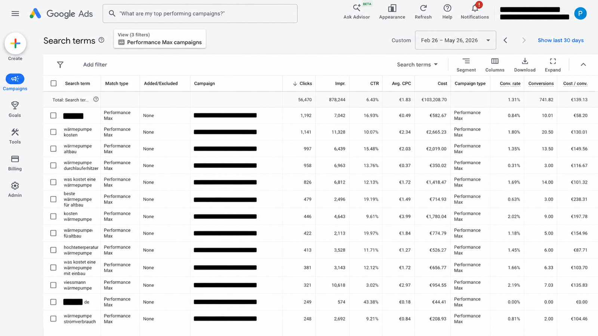

Google Ads vs. Meta Ads vs. TikTok Ads für E‑Commerce 2026.
Keine Marketing-Schule. Keine Hersteller-Folien. Ein brutal praktischer Side-by-Side-Vergleich, wo jede Plattform 2026 wirklich Geld einbringt — und wo sie still und leise Budget verbrennt.
Wer 2026 online verkauft, fährt mindestens eines davon: Google Ads, Meta Ads, TikTok Ads. Die meisten E-Commerce-Marken fahren alle drei gleichzeitig — ohne ehrliches Framework, welcher Kanal den nächsten Euro verdient. Dieser Beitrag ist genau dieses Framework, auf Basis von rund €2,1 Mio. pmax-gemanagtem E-Commerce-Spend in Q1 2026 über 14 aktive Retainer in EU und UK.
Meinungsstark. Wenig schmeichelhaft. Sprung zur Vergleichstabelle für die 30-Sekunden-Version.
Kurzfassung — eine Zeile pro Plattform
- Google Ads ist der günstigste Ort, jemanden zu finden, der dein Produkt bereits will.
- Meta Ads ist der günstigste Ort, Nachfrage zu erzeugen — wenn du das Creative-Volumen liefern kannst.
- TikTok Ads hat den günstigsten CPM im Raum — und ist der einfachste Ort, Geld zu verlieren, wenn dein Creative-Tempo zu langsam ist.
CPC und CPM in der Realität — was wir 2026 wirklich zahlen
Veröffentlichte Benchmarks sind nutzlos, weil die Streuung gigantisch ist. Was folgt, ist die Median-Range über unsere aktiven EU-E-Commerce-Accounts in Q1 2026 — nicht theoretisch, nicht offiziell, einfach was die Spend-Reports ausgespuckt haben.
| Metrik (EU-Median, Q1 2026) | Google Ads | Meta Ads | TikTok Ads |
|---|---|---|---|
| CPM (€) | €15–€55 Shopping · €30–€120 Brand | €8–€18 Prospecting · €18–€35 Retargeting | €3–€8 Prospecting |
| CPC (€) | €0,40–€2,20 Shopping · €1,20–€6,50 Brand | €0,35–€1,10 | €0,18–€0,55 |
| CTR | 3,5–9% Shopping | 0,9–2,2% | 0,6–1,5% |
| Median-Conversion-Rate (vom Klick) | 2,4–5,8% | 0,9–2,2% | 0,4–1,4% |
Was das wirklich heißt: Ein Google-Shopping-Klick ist 4–8× teurer als ein TikTok-Klick — aber auch 4–10× wahrscheinlicher, in einen Kauf umzuschlagen. CPM ist die falsche Einheit für E-Commerce. CPA (oder besser: CAC-Payback) ist die einzig ehrliche.
Wer Channels nur nach CPM bewertet, gibt zu viel auf TikTok aus und zu wenig auf Google. Reichweite ist nicht das Ziel. Bezahlte Aufmerksamkeit von Menschen, die das Produkt wollen und sich leisten können, ist das Ziel.
High AOV vs. Low AOV — der unterschätzte Hebel
Welche Plattform gewinnt, hängt fast genauso stark vom Average Order Value ab wie von der Kategorie.
| Average Order Value | Google Ads | Meta Ads | TikTok Ads |
|---|---|---|---|
| €20–€60 (Impuls) | Mittel Margen vom CPC aufgefressen | Gut Sweet Spot für Advantage+ | Gut Native viraler Pfad |
| €60–€200 (überlegt) | Gut Beste Gesamtpassung | Gut Stark mit Creative | Mittel Hohe Iteration nötig |
| €200–€800 (bewusst) | Exzellent Brand Search dominiert | Mittel Lange Entscheidung | Schwach Falsche Intent |
| €800+ (Luxus / B2B-nah) | Exzellent Microsoft Ads auch relevant | Mittel Lange Zyklen | Schwach Audience-Mismatch |
Attribution — was jede Plattform überbewertet
Alle drei Plattformen schreiben sich Conversions zu, die nicht ihre sind. Sie unterscheiden sich darin, wie stark — und wie leicht man gegensteuern kann.
| Attribution | Google Ads | Meta Ads | TikTok Ads |
|---|---|---|---|
| Default-Klick-Fenster | 30 Tage Klick, 1 Tag View | 7 Tage Klick, 1 Tag View | 7 Tage Klick, 1 Tag View |
| Server-Side-Fix | Enhanced Conversions + Offline-Import | CAPI + Offline Events | Events API (noch jung) |
| Über-Zuweisung (QoQ-Messung) | ~15–25% | ~25–40% | ~35–55% |
| Ehrlichkeits-Score (subjektiv) | 6/10 | 4/10 | 3/10 |
Creative-Anforderungen — was jede Plattform wirklich frisst
| Creative-Anforderung | Google Ads | Meta Ads | TikTok Ads |
|---|---|---|---|
| Produktionsfrequenz für stabile Performance | 1–3 neue Assets pro Quartal | 10–20 frische Assets pro Woche | 15–30 native Assets pro Woche |
| Best-Performing-Creative | Produkt-Feed + Responsive Text | UGC-Style-Video, gründergetrieben | Native UGC, hook-led |
| Creative-Fatigue-Fenster | 3–6 Monate | 2–4 Wochen | 5–14 Tage |
Wer keine 10 frischen Meta-Format-Assets pro Woche liefern kann, sollte Meta Ads nicht starten. Wer keine 15 nativen TikTok-Assets pro Woche liefern kann, ebenso nicht. Wir sagen das Kunden höflich; sie hören selten beim ersten Mal zu. Dann führen wir das Gespräch in Monat drei erneut.
Wann Performance Max gewinnt — und wann es verliert
PMax gewinnt, wenn …
- die Marke bereits starke organische und Brand-Search-Nachfrage hat;
- der Katalog konsistente Marge über SKUs zeigt und der Feed sauber ist;
- du tiefe Conversion-Daten hast — First-Party-Signale, Offline-Events, value-based Bidding;
- du bereit bist, Brand Search auszuschließen und separat manuell zu fahren.
PMax verliert, wenn …
- der Katalog stark unterschiedliche Margen enthält;
- du chirurgische Keyword-Kontrolle brauchst — die liefert PMax nicht;
- Brand Search absorbiert und doppelt gezählt wird;
- die Conversion-Daten flach sind — nur Form-Fills, keine Offline-Events.

Der ehrliche Mix — unsere Standardempfehlung
Wenn uns ein neuer E-Commerce-Kunde heute fragt, wie er €30.000 Monatsbudget aufteilen soll, ohne weiteren Kontext:
- ~55% Google Ads — Performance Max + sauber strukturierte Search, Brand separat.
- ~35% Meta Ads — Advantage+ Shopping fürs Prospecting, DPA fürs Retargeting, 10+ neue Creatives/Woche.
- ~10% TikTok Ads — Spark Ads auf Creator-Content, nur mit funktionierender Creative-Pipeline.
Abschluss — wähle, was zum Geschäft passt, nicht was am lautesten ist
Die meisten E-Commerce-Marken haben kein „Meta-Problem" oder „TikTok-Problem". Sie haben ein Creative-Throughput-Problem, ein Attributionsproblem oder ein Katalogproblem — und beschuldigen die Plattform. Fixe die zugrundeliegende Einschränkung, und der Channel-Mix ordnet sich meist innerhalb eines Quartals von selbst.
Wenn du eine einseitige Diagnose willst, wo dein Media-Budget über Google, Meta und TikTok leckt: 30 Minuten kostenlos buchen. Keine Folien, kein Sales-Pitch.
Zuletzt aktualisiert 26. Mai 2026 · Monatlich geprüft · Basis €2,1 Mio. E-Com-Spend Q1 2026